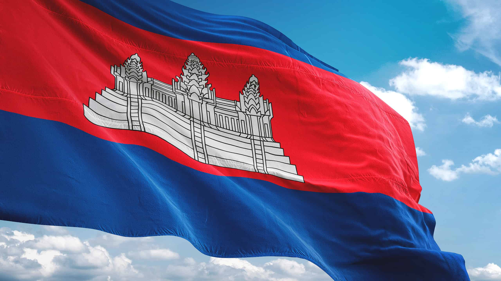
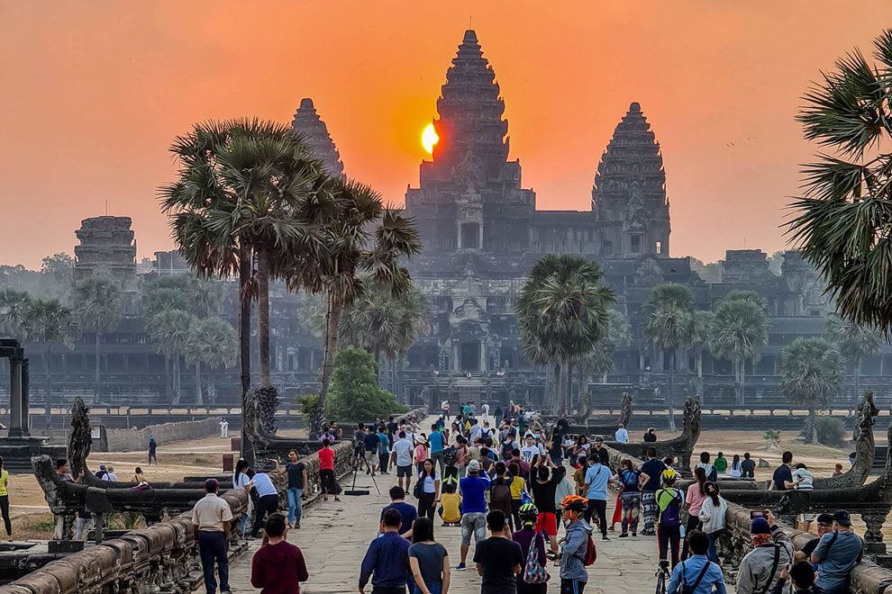
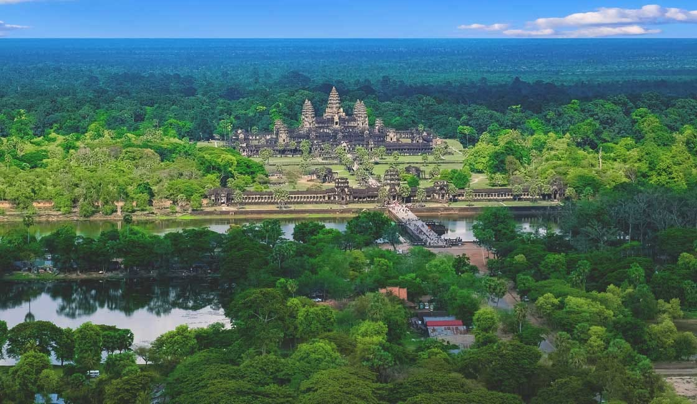
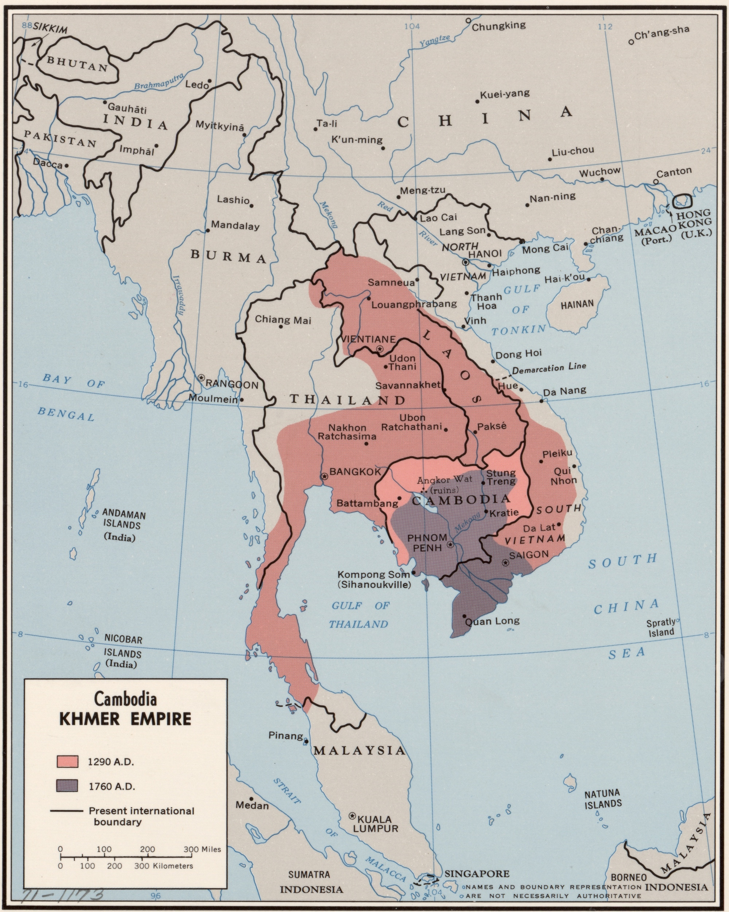

ប្រាសាទព្រះខ័ន្ធ
ត្រឡប់ក្រោយ
ច្រកចូលសំខាន់របស់ប្រាសាទនេះស្ថិតនៅទិសខាងកើត ប៉ុន្តែភ្ញៀវទេសចរអាចចេញចូលពីទិសខាងលិច ឬទិសខាងជើងក៏បានដែរ។ នាខែវិច្ឆិកា ឆ្នាំ១៩៣៩ លោក មូរីស៍គ្លេសជាមន្ត្រីអភិរក្សអង្គរបានរកឃើញសិលាស្ដម្ភចារិកមួយផ្ទាំងកប់ដីនៅក្នុងបរិវេណនៃប្រាសាទនេះ។ ផ្ទាំងសិលាចារិកនោះមានកម្ពស់ ១,៨៥ម៉ែត្រ សរសេរជាភាសាសំស្រ្កឹតមានចំនួន ១៧៨ ស្លោកគាថា ដែលបរិយាយអំពី ការបួងសួង ការលើកសរសើរព្រះរាជា ការតម្កល់ព្រះបដិមា ការចូលរួមថែទាំនិងផ្តល់តង្វាយពីព្រាហ្មផ្សេងៗ ពីស្តេចជ្វា ស្តេចចាម ស្តេចយួន និងពីអ្នកភូមិនៅជុំវិញប្រាសាទ ពិធីអភិសេកព្រះ និងផ្តល់ព័ត៌មានអំពីបារាយណ៍ជយតដាកដែលមានប្រាសាទនាគព័ន្ធស្ថិតនៅចំកណ្តាល។ សិលាចារិកនេះនិពន្ធដោយព្រះអម្ចាស់ វិរកុមារ ជាព្រះបុត្រាព្រះបាទជ័យវរ្ម័នទី៧[១]។ ប្រាសាទព្រះខ័ន មានរាងបួនជ្រុងទ្រវែង មានវិមាត្រប្រវែង ៨០០ ម៉ែត្រ x ៧០០ ម៉ែត្រ សង់ឡើងនៅរជ្ជកាលព្រះបាទជ័យវរ្ម័នទី៧ តែពុំបានសង់រួចនៅក្នុងសម័យព្រះអង្គទេ មហាក្សត្រក្រោយៗ បានសង់បន្ថែមបន្ដបន្ទាប់នៅគ្រិស្តសតវត្សទី ១២ - ១៣។ ក្បាច់រចនានៃប្រាសាទ មានលក្ខណៈដូចជាប្រាសាទបន្ទាយក្តី និង ប្រាសាទតាព្រហ្មដែរ។ ប្រាសាទព្រះខ័ន ស្ថិតនៅតាមផ្លូវវង់ធំ ដោយចេញតាមផ្លូវទ្វារដីឆ្នាំងនៃរាជធានីអង្គរធំ។ ប្រាសាទនេះកសាងឡើងនៅសតវត្យរ៍ទី១២ ក្នុងឆ្នាំ១១៩១ ដោយព្រះបាទជ័យវរ្ម័នទី៧ ដើម្បីឧទ្ទិសដល់ព្រះវររាជបិតារបស់ព្រះអង្គ។ ប្រាសាទនេះ មានទំហំ ៥៦ ហិចតា។ តាមសិលាចារឹកថា ប្រាសាទនេះសាងសង់នៅសមរភូមិចុងក្រោយ ដែលព្រះបាទជ័យវរ្ម័នទី៧ បានផ្តួលរំលំពួកចាម។ ប្រាសាទនេះមានកំពែងបួនជាន់។ នៅកំពែងខាងក្រៅ ដែលបច្ចុប្បន្នរុំព័ទ្ធទៅដោយព្រៃ គឺជាកន្លែងដែលព្រះសង្ឃ និងសិស្សស្នាក់នៅក្នុងប្រាសាទនេះ។ នៅកំពែងជាន់ទីពីរ គឺជាកន្លែងគោរពសាសនា។ ប្រាសាទកណ្តាលជាកន្លែងព្រះពុទ្ធសាសនា ឯភាគខាងជើង និងខាងលិច គឺសម្រាប់ឧទ្ទិសដល់ព្រហ្មមញ្ញសាសនា គឺព្រះនារាយណ៍ (ព្រះវិស្ណុ) (ខាងលិច) និងព្រះឥសូរ (ព្រះសិវៈ) (ខាងជើង)។ នៅផ្នែកខាងត្បូង ជាកន្លែងសម្រាប់គោរពបុព្វជន។ ប្រាសាទព្រះខ័នត្រូវបានកសាងនៅលើតំបន់ដែលព្រះបាទជ័យវរ្ម័នទី៧ បានទទួលជ័យជំនះលើការឈ្លានពានរបស់ពួកចាម ក្នុង១១៩១នៃគ្រឹស្តសករាជ។ ឈ្មោះនៃប្រាសាទមានន័យថា ព្រះខ័នជ័យ (ដាវជ័យ) ដែលយកឈ្មោះពីបុរាណ ជ័យស្រី (ទីក្រុងជ័យជំនះដ៏ពិសិដ្ឋ)។ ទីតាំងដែលមានប្រាសាទសំខាន់បីគឺប្រាសាទព្រះខ័ន ប្រាសាទតាសោម និងប្រាសាទនាគព័ន្ធត្រូវបានគេដាក់ឈ្មោះថា នគរជយស្រី មានន័យថាទីក្រុងនៃព្រះខ័នជ័យ។ ប្រាសាទព្រះខ័នត្រូវបានកសាងនៅចំកណ្តាលអតីតនគរជយស្រីសម្រាប់ឧទ្ទិសថ្វាយជូនដល់ព្រះបិតារបស់ព្រះបាទជ័យវរ្ម័នទី៧ ព្រះនាមធរណិន្រ្ទវម្ម៌ ក្នុងទម្រង់ជាបដិមាព្រះពោធិសត្វអវលោកេស្វរៈ ដែលមាននាមថា ជយវម្ម៌ស្វេរ នៅឆ្នាំ១១៩១។ លើសពីនេះទៅទៀតនៅអឡុងពេលនៃការជួសជុលរាជធានីយសោធរបុរៈ ឬហៅថាក្រុងអង្គរធំដែលធ្លាប់ត្រូវបានដុតបំផ្លាញ់ដោយកងទ័ពចាម ហើយវាមានតួនាទីជាកន្លែងសម្រាប់ព្រះមហាក្សត្រធ្វើការផង ជាសកលវិទ្យាល័យផង និងសម្រាប់គោរពប្រតិបត្តិសាសនាចម្រុះទាំងព្រះពុទ្ធសាសនា និងព្រហ្មញសាសនាផង។ ប្រាសាទព្រះខ័នក៏ធ្លាប់ជាសមរភូមិប្រយុទ្ធប្រឡាក់ទៅដោយថ្លុកឈាមនៅពេលកងទ័ពចាមវាយលុបនិងគ្រប់គ្រងក្រុងអង្គរនៅឆ្នាំ១១៧៧ ប៉ុន្តែត្រូវបានព្រះបាទជយវម្ម៌ទី៧ ធ្វើសង្គ្រាមដណ្តើមយកជ័យបានមកវិញនៅឆ្នាំ១១៨១។
អានបន្ត...

១. ជាបូជនីយដ្ឋានសាសនាធំជាងគេបំផុតលើលោក

យោងតាមកំណត់ត្រាហ្គីនណេសពិភពលោក (Guinness World Record) ប្រាសាទអង្គរវត្ដត្រូវបានចាត់ទុកជាទីបូជនីយដ្ឋានខាងសាសនាធំជាងគេបំផុតក្នុងពិភពលោកបើប្រៀបធៀបនឹងប្រាសាទបុរាណជាច្រើនទៀតនៃប្រទេសផ្សេងៗ។ វាលាតសន្ធឹងលើផ្ទៃដី២៤,៨ គ.ម. ជាមួយនឹងផ្ទៃក្រឡា ១.៦២៦.០០០ ម៉ែត្រការេ។ ប្រាសាទអង្គរវត្តត្រូវបានរកឃើញឡើងវិញដោយ ធម្មជាតិវិទូបារាំងលោក ហង់ហ្រ៊ី មូហ៊ូត (Henri Mouhot) នៅឆ្នាំ១៨៦០។
២. ការបង្ហាញខ្លួនលើទង់ជាតិ
រូបប្រាសាទអង្គរវត្ដដែលស្ថិតនៅចំកណ្ដាលនៃទង់ជាតិប្រទេសកម្ពុជាត្រូវបានបង្ហាញរូបរាងក្នុងឆ្នាំ១៨៥០ ប្រហែលជាក្នុងអំឡុងពេលដែលកម្ពុជាស្ថិតក្រោមសម័យអាណាព្យាបាលបារាំង។
៣. ជាសម្បត្ដិបេតិកភណ្ឌពិភពលោក
ប្រាសាទអង្គរវត្តត្រូវបានបញ្ចូលទៅក្នុងបញ្ជីបេតិកភណ្ឌពិភពលោករបស់អង្គការយូណេស្កូ (UNESCO) នៅឆ្នាំ១៩៩២។
៤. បុព្វហេតុសាសនា

ប្រាសាទអង្គរវត្ដសាងសង់ក្នុងរាជ្យកាលព្រះបាទសូរ្យវរ្ម័នទី២ក្នុងគោលបំណងឧទ្ទិសដល់សាសនាហិណ្ឌូគណៈព្រះវិស្ណុ។ ក្រោយមកដោយសារការផ្លាស់ប្ដូរសាសនាក្នុងសម័យព្រះរាជាក្រោយៗ ទើបប្រាសាទមួយនេះមានលក្ខណៈពុទ្ធសាសនាវិញ។
៥. លក្ខណៈពិសេសខុសពីប្រាសាទនានា
ចំណុចដែលធ្វើឱ្យប្រាសាទមួយនេះកាន់តែគួរឱ្យចាប់អារម្មណ៍នោះគឺការបែរមុខទៅរកទិសខាងលិច ខុសពីប្រាសាទនានាដែលបែរមុខទៅទិសខាងកើត។ ការបែរទៅទិសខាងលិចនេះដោយយោងតាមមូលហេតុដូចជា៖ វាជាផ្នូររបស់ព្រះបាទសូរ្យវរ្ម័នទី២ និងការគោរពបូជាព្រះវិស្ណុជាដើម។
៦. អង្គររុងរឿងពេលដែលអឺរ៉ុបកំពុងដុនដាប
ក្នុងអំឡុងចន្លោះសតវត្សទី៩និងទី១០ជាពេលដែលអឺរ៉ុបកំពុងធ្លាក់ចុះដុនដាបក្នុងយុគងងឹត តែប្រទេសក្នុងតំបន់អាស៊ីអាគ្នេយ៍វិញ ជាពិសេសប្រទេសកម្ពុជាកំពុងស្ថិតក្នុងភាពរុងរឿងខ្លាំង នោះគឺសម័យអាណាចក្រខ្មែរ។